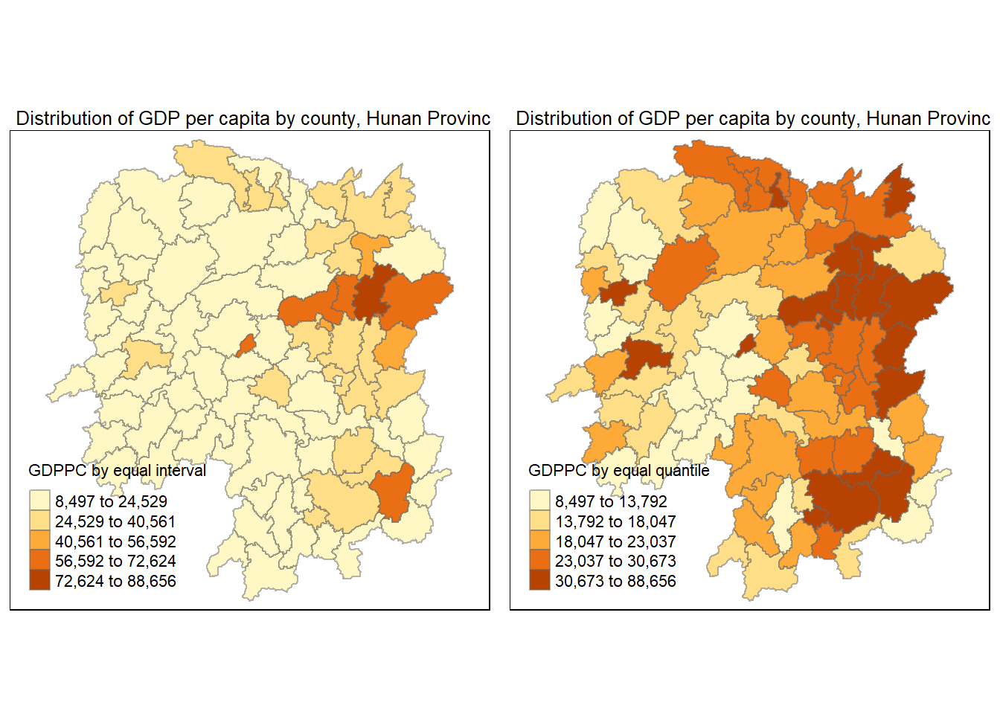
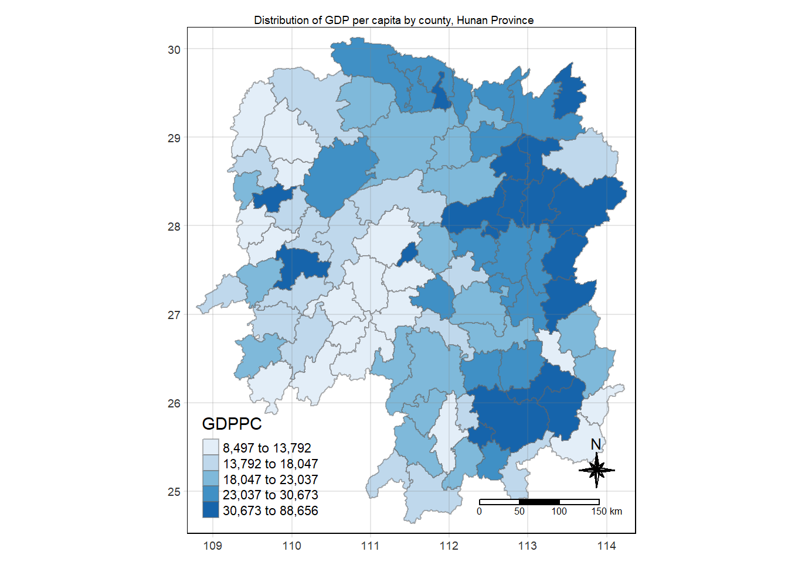
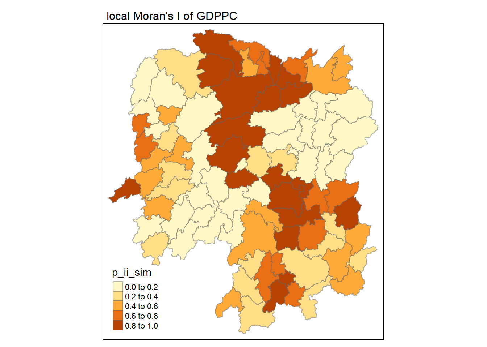
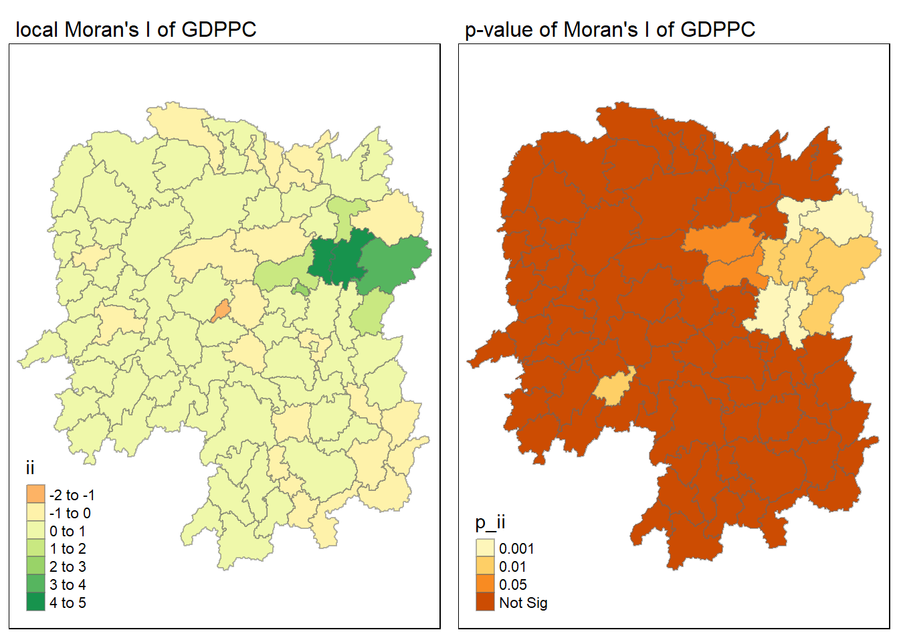
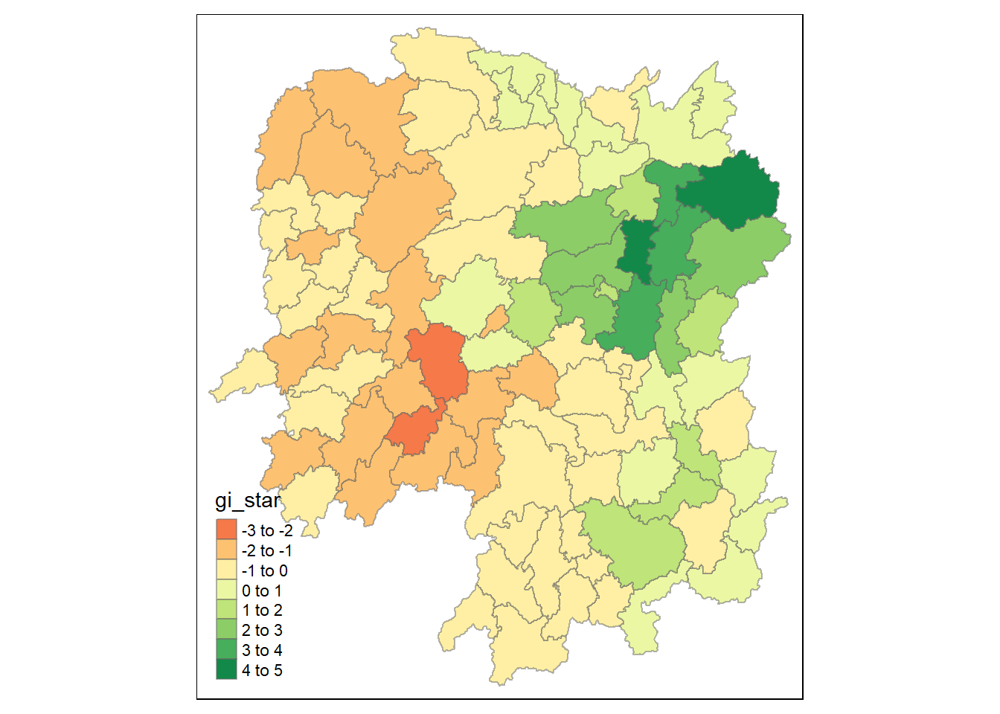
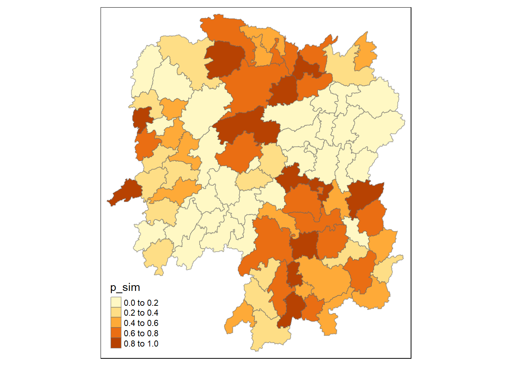
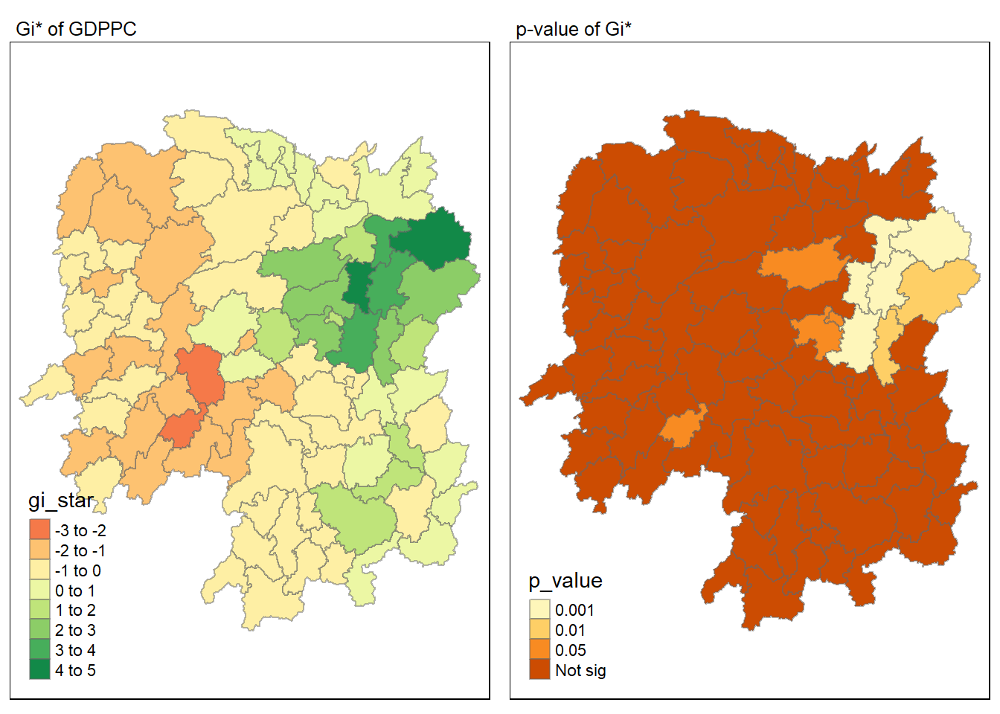
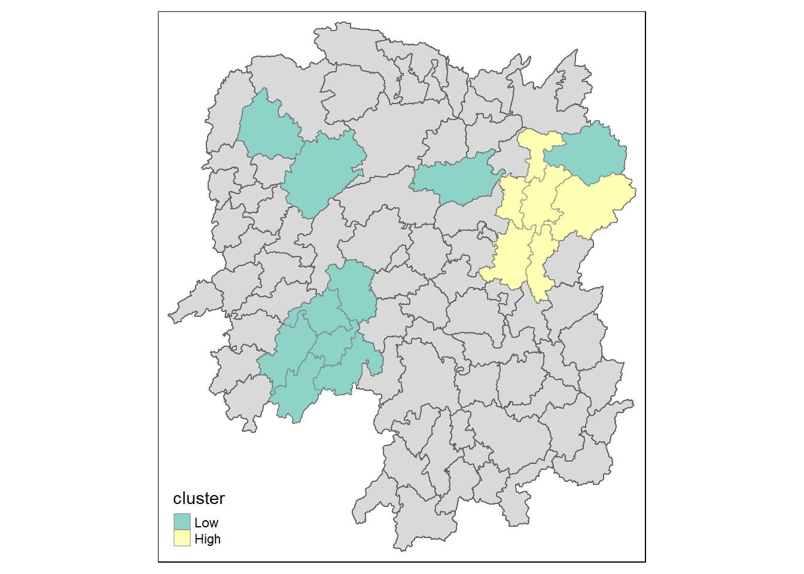

pacman::p_load(sf, spdep, tmap, tidyverse, sfdep)In-class exercise 05
Global and Local Measures of Spatial Autocorrelation: sfdep methods
Getting started
Loading the R packages
Preparing the data
hunan <- st_read(dsn = "C:/ngmengye/ISSS626-GAA/Hands-on_exercise/Hands-on_ex05/data/geospatial",
layer = "Hunan")Reading layer `Hunan' from data source
`C:\ngmengye\ISSS626-GAA\Hands-on_exercise\Hands-on_ex05\data\geospatial'
using driver `ESRI Shapefile'
Simple feature collection with 88 features and 7 fields
Geometry type: POLYGON
Dimension: XY
Bounding box: xmin: 108.7831 ymin: 24.6342 xmax: 114.2544 ymax: 30.12812
Geodetic CRS: WGS 84hunan2012 <- read_csv("C:/ngmengye/ISSS626-GAA/Hands-on_exercise/Hands-on_ex04/data/aspatial/Hunan_2012.csv")Rows: 88 Columns: 29
── Column specification ────────────────────────────────────────────────────────
Delimiter: ","
chr (2): County, City
dbl (27): avg_wage, deposite, FAI, Gov_Rev, Gov_Exp, GDP, GDPPC, GIO, Loan, ...
ℹ Use `spec()` to retrieve the full column specification for this data.
ℹ Specify the column types or set `show_col_types = FALSE` to quiet this message.Combining both data fram by using left join
all the rows from the first data frame hunan are kept. The result will contain all rows from hunan, along with matching data from hunan2012
hunan_GDPPC <- left_join(hunan,hunan2012) %>%
select(1:4, 7, 15)Joining with `by = join_by(County)`
Caution
In order to retain the geospatial properties, the left data frame must the sf data.frame (i.e. hunan)
Plotting a choropleth map
equal interval = equal range of values
quantile = equal number of observations
equal <- tm_shape(hunan_GDPPC) +
tm_fill("GDPPC",
title = "GDPPC by equal interval",
style = "equal") +
tm_borders(alpha = 0.5) +
tm_layout(main.title = "Distribution of GDP per capita by county, Hunan Province",
main.title.size = 0.8)
quantile <- tm_shape(hunan_GDPPC) +
tm_fill("GDPPC",
title = "GDPPC by equal quantile",
style = "quantile") +
tm_borders(alpha = 0.5) +
tm_layout(main.title = "Distribution of GDP per capita by county, Hunan Province",
main.title.size = 0.8)
tmap_arrange(equal,
quantile,
asp=1,
ncol=2)
tmap_mode("plot")tmap mode set to plottingtm_shape(hunan_GDPPC) +
tm_fill("GDPPC",
style = "quantile",
palette = "Blues",
title = "GDPPC") +
tm_layout(main.title = "Distribution of GDP per capita by county, Hunan Province",
main.title.position = "center",
main.title.size = 0.6,
legend.height = 0.45,
legend.width = 0.35,
frame = TRUE) +
tm_borders(alpha = 0.5) +
tm_compass(type="8star", size = 2) +
tm_scale_bar() +
tm_grid(alpha =0.2)
Global Measures of Spatial Association
Queen’s contiguity weights
wm_q <- hunan_GDPPC %>%
mutate(nb=st_contiguity(geometry),
wt=st_weights(nb,
style = "W"),
.before = 1)W = row standardized weights nb = every neighbours wt = weights for each neighbours, 4 neighbours = 1/4
island dont have neighbours, allow zero as lagged value to avoid missing value before = 1 brings the 2 new columns in front of the table
if we use poly2nb, we will not get the simple feature
wm_qSimple feature collection with 88 features and 8 fields
Geometry type: POLYGON
Dimension: XY
Bounding box: xmin: 108.7831 ymin: 24.6342 xmax: 114.2544 ymax: 30.12812
Geodetic CRS: WGS 84
First 10 features:
nb
1 2, 3, 4, 57, 85
2 1, 57, 58, 78, 85
3 1, 4, 5, 85
4 1, 3, 5, 6
5 3, 4, 6, 85
6 4, 5, 69, 75, 85
7 67, 71, 74, 84
8 9, 46, 47, 56, 78, 80, 86
9 8, 66, 68, 78, 84, 86
10 16, 17, 19, 20, 22, 70, 72, 73
wt
1 0.2, 0.2, 0.2, 0.2, 0.2
2 0.2, 0.2, 0.2, 0.2, 0.2
3 0.25, 0.25, 0.25, 0.25
4 0.25, 0.25, 0.25, 0.25
5 0.25, 0.25, 0.25, 0.25
6 0.2, 0.2, 0.2, 0.2, 0.2
7 0.25, 0.25, 0.25, 0.25
8 0.1428571, 0.1428571, 0.1428571, 0.1428571, 0.1428571, 0.1428571, 0.1428571
9 0.1666667, 0.1666667, 0.1666667, 0.1666667, 0.1666667, 0.1666667
10 0.125, 0.125, 0.125, 0.125, 0.125, 0.125, 0.125, 0.125
NAME_2 ID_3 NAME_3 ENGTYPE_3 County GDPPC
1 Changde 21098 Anxiang County Anxiang 23667
2 Changde 21100 Hanshou County Hanshou 20981
3 Changde 21101 Jinshi County City Jinshi 34592
4 Changde 21102 Li County Li 24473
5 Changde 21103 Linli County Linli 25554
6 Changde 21104 Shimen County Shimen 27137
7 Changsha 21109 Liuyang County City Liuyang 63118
8 Changsha 21110 Ningxiang County Ningxiang 62202
9 Changsha 21111 Wangcheng County Wangcheng 70666
10 Chenzhou 21112 Anren County Anren 12761
geometry
1 POLYGON ((112.0625 29.75523...
2 POLYGON ((112.2288 29.11684...
3 POLYGON ((111.8927 29.6013,...
4 POLYGON ((111.3731 29.94649...
5 POLYGON ((111.6324 29.76288...
6 POLYGON ((110.8825 30.11675...
7 POLYGON ((113.9905 28.5682,...
8 POLYGON ((112.7181 28.38299...
9 POLYGON ((112.7914 28.52688...
10 POLYGON ((113.1757 26.82734...Performing Global Moran’s I test
global_moran_test(wm_q$GDPPC,
wm_q$nb,
wm_q$wt,
)
Moran I test under randomisation
data: x
weights: listw
Moran I statistic standard deviate = 4.7351, p-value = 1.095e-06
alternative hypothesis: greater
sample estimates:
Moran I statistic Expectation Variance
0.300749970 -0.011494253 0.004348351 p-value <0.05, reject null hypothesis. There are spatial autocorrelation either positive or negative.
Moran I = 0.300749970 relative weak positive spatial autocorrelation
Performing Global Moran’s I permutation test
set.seed(1234)
global_moran_perm(wm_q$GDPPC,
wm_q$nb,
wm_q$wt,
nsim = 99)
Monte-Carlo simulation of Moran I
data: x
weights: listw
number of simulations + 1: 100
statistic = 0.30075, observed rank = 100, p-value < 2.2e-16
alternative hypothesis: two.sidedThe statistical report on previous tab shows that the p-value is smaller than alpha value of 0.05. Hence, we have enough statistical evidence to reject the null hypothesis that the spatial distribution of GPD per capita are resemble random distribution (i.e. independent from spatial). Because the Moran’s I statistics is greater than 0. We can infer that the spatial distribution shows sign of clustering.
Tip
The number of simulation is always equal to nsim + 1. This means in nsim = 99, 100 simulation will be performed.
LISA map
Outliers: High-Low & Low-High Clusters: High-High & Low-Low
Computing local Moran’s I
lisa <- wm_q %>%
mutate(local_moran=local_moran(
GDPPC, nb,wt,nsim=99),
.before = 1) %>%
unnest(local_moran)Columns:
ii: local moran statistics, positive = clustering
eii: expectation of local moran statistic under the assumption of spatial randomness
var_ii: variance of local moran statistic, high = more psread out
z_ii: standard deviate of local moran statistic, positive = cluster of similar values
skewness: Positive = more extreme values above the mean
kurtosis: High kurtosis = more extreme outlier
tmap_mode("plot")tmap mode set to plottingtm_shape(lisa) +
tm_fill("ii") +
tm_borders(alpha = 0.5) +
tm_view(set.zoom.limits = c(6,8)) +
tm_layout(
main.title = "local Moran's I of GDPPC",
main.title.size = 1
)Variable(s) "ii" contains positive and negative values, so midpoint is set to 0. Set midpoint = NA to show the full spectrum of the color palette.
Visualising p-value of local Moran’s I
tmap_mode("plot")tmap mode set to plottingtm_shape(lisa) +
tm_fill("p_ii_sim") +
tm_borders(alpha = 0.5) +
tm_view(set.zoom.limits = c(6,8)) +
tm_layout(
main.title = "local Moran's I of GDPPC",
main.title.size = 1
)
Visualising local Moran’s I and p-value
tmap_mode("plot")tmap mode set to plottingmap1 <- tm_shape(lisa) +
tm_fill("ii") +
tm_borders(alpha = 0.5) +
tm_view(set.zoom.limits = c(6,8)) +
tm_layout(
main.title = "local Moran's I of GDPPC",
main.title.size = 1
)
map2 <- tm_shape(lisa) +
tm_fill("p_ii", breaks = c(0,0.001,0.01,0.05,1),labels = c("0.001","0.01","0.05","Not Sig")) +
tm_borders(alpha = 0.5) +
tm_view(set.zoom.limits = c(6,8)) +
tm_layout(
main.title = "p-value of Moran's I of GDPPC",
main.title.size = 1
)
tmap_arrange(map1,map2,ncol=2)Variable(s) "ii" contains positive and negative values, so midpoint is set to 0. Set midpoint = NA to show the full spectrum of the color palette.
Plotting LISA map
lisa_sig <- lisa %>%
filter(p_ii_sim < 0.05)
tmap_mode("plot")tmap mode set to plottingtm_shape(lisa) +
tm_polygons() +
tm_borders(alpha = 0.5) +
tm_shape(lisa_sig) +
tm_fill("mean") +
tm_borders(alpha = 0.4)Warning: One tm layer group has duplicated layer types, which are omitted. To
draw multiple layers of the same type, use multiple layer groups (i.e. specify
tm_shape prior to each of them).
Hot Spot and Cold Spot Area Analysis (HCSA)
Use Getis to identify clusters of high values (hot spots) and low values (cold spots)
Computing local Gi* statistics
wm_idw <- hunan_GDPPC %>%
mutate(nb = include_self(
st_contiguity(geometry)),
wts = st_inverse_distance(nb,
geometry,
scale = 1,
alpha = 1),
.before = 1)! Polygon provided. Using point on surface.Warning: There was 1 warning in `stopifnot()`.
ℹ In argument: `wts = st_inverse_distance(nb, geometry, scale = 1, alpha = 1)`.
Caused by warning in `st_point_on_surface.sfc()`:
! st_point_on_surface may not give correct results for longitude/latitude dataComputing local Gi* statistics
HCSA <- wm_idw %>%
mutate(local_Gi = local_gstar_perm(
GDPPC, nb, wts, nsim = 99),
.before = 1) %>%
unnest(local_Gi)
HCSASimple feature collection with 88 features and 18 fields
Geometry type: POLYGON
Dimension: XY
Bounding box: xmin: 108.7831 ymin: 24.6342 xmax: 114.2544 ymax: 30.12812
Geodetic CRS: WGS 84
# A tibble: 88 × 19
gi_star cluster e_gi var_gi std_dev p_value p_sim p_folded_sim skewness
<dbl> <fct> <dbl> <dbl> <dbl> <dbl> <dbl> <dbl> <dbl>
1 0.261 Low 0.00126 1.07e-7 0.283 7.78e-1 0.66 0.33 0.783
2 -0.276 Low 0.000969 4.76e-8 -0.123 9.02e-1 0.98 0.49 0.713
3 0.00573 High 0.00156 2.53e-7 -0.0571 9.54e-1 0.78 0.39 0.972
4 0.528 High 0.00155 2.97e-7 0.321 7.48e-1 0.56 0.28 0.942
5 0.466 High 0.00137 2.76e-7 0.386 7.00e-1 0.52 0.26 1.32
6 -0.445 High 0.000992 7.08e-8 -0.588 5.57e-1 0.68 0.34 0.692
7 2.99 High 0.000700 4.05e-8 3.13 1.74e-3 0.04 0.02 0.975
8 2.04 High 0.00152 1.58e-7 1.77 7.59e-2 0.16 0.08 1.26
9 4.42 High 0.00130 1.18e-7 4.22 2.39e-5 0.02 0.01 1.20
10 1.21 Low 0.00175 1.25e-7 1.49 1.36e-1 0.18 0.09 0.408
# ℹ 78 more rows
# ℹ 10 more variables: kurtosis <dbl>, nb <nb>, wts <list>, NAME_2 <chr>,
# ID_3 <int>, NAME_3 <chr>, ENGTYPE_3 <chr>, County <chr>, GDPPC <dbl>,
# geometry <POLYGON [°]>Visualising Gi*
tmap_mode("plot")tmap mode set to plottingtm_shape(HCSA) +
tm_fill("gi_star") +
tm_borders(alpha = 0.5) +
tm_view(set.zoom.limits = c(6,8))Variable(s) "gi_star" contains positive and negative values, so midpoint is set to 0. Set midpoint = NA to show the full spectrum of the color palette.
Dark green areas indicates strong positive spatial autocorrelation
Visualising p-value of HCSA
tmap_mode("plot")tmap mode set to plottingtm_shape(HCSA) +
tm_fill("p_sim") +
tm_borders(alpha = 0.5)
Visualising local HCSA
tmap_mode("plot")tmap mode set to plottingmap1 <- tm_shape(HCSA) +
tm_fill("gi_star") +
tm_borders(alpha = 0.5) +
tm_view(set.zoom.limits = c(6,8)) +
tm_layout(main.title = "Gi* of GDPPC",
main.title.size = 0.8)
map2 <- tm_shape(HCSA) +
tm_fill("p_value",
breaks = c(0, 0.001, 0.01, 0.05, 1),
labels = c("0.001", "0.01", "0.05", "Not sig")) +
tm_borders(alpha = 0.5) +
tm_layout(main.title = "p-value of Gi*",
main.title.size = 0.8)
tmap_arrange(map1, map2, ncol = 2)Variable(s) "gi_star" contains positive and negative values, so midpoint is set to 0. Set midpoint = NA to show the full spectrum of the color palette.
Visualising hot spot and cold spot areas
HCSA_sig <- HCSA %>%
filter(p_sim < 0.05)
tmap_mode("plot")tmap mode set to plottingtm_shape(HCSA) +
tm_polygons() +
tm_borders(alpha = 0.5) +
tm_shape(HCSA_sig) +
tm_fill("cluster") +
tm_borders(alpha = 0.4)Warning: One tm layer group has duplicated layer types, which are omitted. To
draw multiple layers of the same type, use multiple layer groups (i.e. specify
tm_shape prior to each of them).